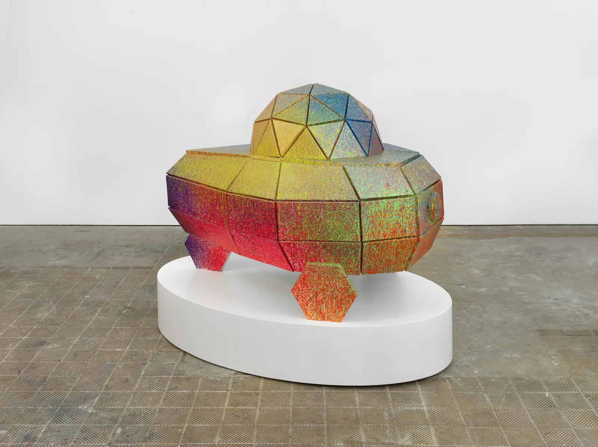

<!doctype html><html lang="tr"><meta charset="utf-8"><meta name="viewport" content="width=device-width,initial-scale=1"><title>DANIEL KNORR, Peardrop Spare Parts: Center Right Side Panel, 2022 | PİLEVNELİ</title><style>body{margin:0;background:#f6f5f1;color:#1d2327;font:16px/1.6 system-ui,sans-serif}main{max-width:1100px;margin:auto;padding:36px 28px}a{color:#244e8b}h1{font-size:32px;line-height:1.25}img{max-width:100%;height:auto}nav,.notice{padding:14px 20px;background:white;border:1px solid #ddd;border-radius:8px;margin:0 0 24px}nav{display:flex;gap:24px;flex-wrap:wrap}.records_list ul{list-style:none;padding:0;display:grid;grid-template-columns:repeat(auto-fit,minmax(260px,1fr));gap:24px}.records_list li{background:white;padding:16px}.image img{max-height:600px;object-fit:contain}.clear{clear:both}button,input,select{font:inherit;padding:9px 14px;border:1px solid #bbb;border-radius:6px}button{cursor:pointer;background:white}small{color:#667}table{width:100%;border-collapse:collapse}td,th{text-align:left;padding:10px;border-bottom:1px solid #ddd}.tag{font-size:12px;border-radius:5px;padding:3px 8px;background:#e5ebe5}pre{white-space:pre-wrap}</style><main><nav><a href="../arsiv.html">← Arşiv dizini</a><a href="https://web.archive.org/web/20260608024456/https://www.pilevneli.com/exhibitions/67/works/artworks-10736-daniel-knorr-peardrop-spare-parts-center-right-side-panel-2022/">Wayback kopyası</a><a href="../texts/64fbb60a11dcd693.txt">Düz metin</a></nav><h1>DANIEL KNORR, Peardrop Spare Parts: Center Right Side Panel, 2022 | PİLEVNELİ</h1><div class="content_alt clearwithin" id="content">
<div class="subsection-works">
<div class="artwork_detail_wrapper site-popup-enabled-content" data-pageload-popup-fallback-close-path="/exhibitions/67/works/">
<div class="clearwithin record-layout-standard artwork image_gallery_has_caption" data-search-record-id="10736" data-search-record-type="artworks" id="image_gallery">
<div class="draginner">
<div id="image_container_wrapper">
<div class="" data-record-type="artwork" id="image_container">
<div class="item">
<span class="image" data-height="2362" data-width="3154">

</span>

</div>
</div>
</div>
<div class="clearwithin" id="content_module">
<div class="artwork_details_wrapper clearwithin">
<h1 class="artist">
<a href="https://web.archive.org/web/20260608024456/https://www.pilevneli.com/artists/60-daniel-knorr/">DANIEL KNORR</a>
</h1>
<div class="subtitle">
<span class="title">Peardrop Spare Parts: Center Right Side Panel</span><span class="comma">, </span><span class="year">2022</span>
</div>
<div class="detail_view_module detail_view_module_artwork_caption prose">
<div class="medium">Tuval üzerine akrilik / Acrylic on canvas </div><div class="dimensions">20 x 74.5 cm </div>
</div>
<div class="detail_view_module detail_view_module_copyright_line">
<div class="copyright_line">
                                            Copyright The Artist
                                        </div>
</div>
<!--excludeindexstart-->
<div class="clear"></div>
<div class="visualisation-tools horizontal-view">
</div>
<!--excludeindexend-->
<div class="hidden" id="artwork_description_2" tabindex="-1">
<div class="detail_view_module prose">
</div>
</div>
<div class="detail_view_module prose artwork-description__provenance">
<h3>Provenance</h3>
            The Artist 
    </div>
<div class="detail_view_module prose artwork-description__exhibitions">
<h3>EXHIBITIONS</h3>
            - Golden Peardrop Theatre, PİLEVNELİ, İstanbul, 2022 
    </div>
<!--excludeindexstart-->
<div class="page_stats pagination_controls" id="page_stats_0">
<div class="ps_links">
<div class="ps_item pagination_controls_prev"><a class="ps_link ps_previous focustrap-ignore" href="a4e67bbc2c4f1c0c.html">PREVIOUS</a>
</div>
<div class="ps_item sep">|</div>
<div class="ps_item pagination_controls_next"><a class="ps_link ps_next focustrap-ignore" href="5ce9f0a79dc70898.html">Next</a>
</div>
</div>
<div class="ps_pages">
<div class="ps_pages_indented">
<div class="ps_page_number">38 </div>
<div class="left">of
                         103</div>
</div>
</div>
<div class="clear"></div>
</div>
<!--excludeindexend-->
</div>
</div>
</div>
<div class="draginner_loader loader_basic"></div>
</div>
<div class="related_artists_container">
<div class="divider inner"></div>
<div class="scroll_section_container">
<section class="related_items_panel clearwithin not-prose" data-subsection-type="related_artists" id="related_artists">
<h2 class="related_items_panel_heading">RELATED ARTIST</h2>
<div class="records_list mini_list">
<ul>
<li>
<a href="80e3a062b6882314.html">
<span class="icon"><span>

</span></span>
<div class="content">
<h2>DANIEL KNORR</h2>
</div>
</a>
</li>
</ul>
</div>
</section>
</div>
</div>
</div>
<div class="back_to_link">
<div class="divider inner"></div>
<div class="link"><a href="https://web.archive.org/web/20260608024456/https://www.pilevneli.com/exhibitions/past/">BACK TO PAST EXHIBITIONS</a></div>
</div>
</div>
</div></main></html>